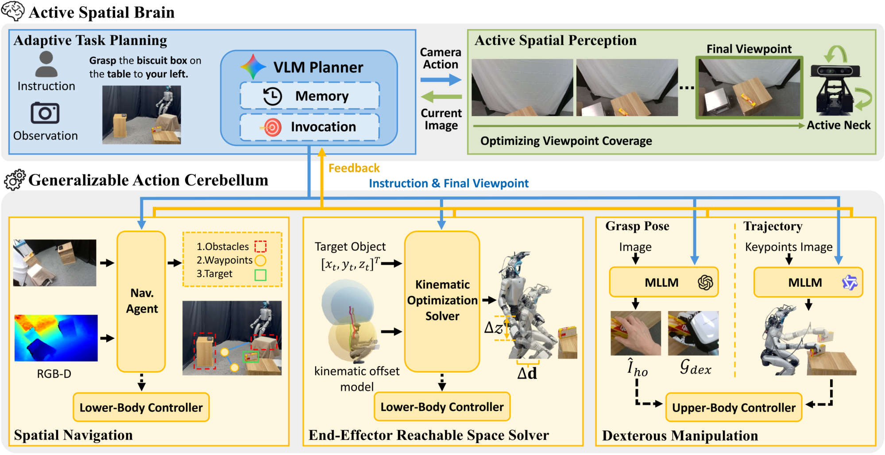

Active Spatial Brain + Action Cerebellum
把视角也当成可调的动作，先主动看清楚，再决定下一步派谁去做。
Humanoid Whole-Body Manipulation via Active Spatial Brain and Generalizable Action Cerebellum
五类任务的难档，本文 60.0/70.0/55.0/60.0/60.0，数据驱动基线 Ψ₀ 为 35.0/45.0/25.0/0/30.0。
01这篇要解决什么？
这篇把看不清当成一个可以主动解决的问题：相机颈部 2 个自由度，底盘另有 4 个，视角由 VLM 直接决定。对 Agent 研究者，它提供的是另一种感知接口，不是把一帧观测交给更强的模型，而是让规划器自己决定再看哪里。
02先看一个场景
人形要去够柜子深处的一只杯子，杯子被前排的盒子挡住，从当前站位的视野里根本不在画面上。只拿这一帧去问模型杯子在哪，它要么答不出，要么凭常识猜一个位置，机器人照着走过去伸手，够到的是空气。
03方法怎样运转？

- 01
主动感知：视角本身是一个动作
论文把机器人的观察动作连同各自的效果一起写进提示交给 VLM：颈部 2 个自由度，加上底盘沿三轴的平移与绕竖直轴的旋转共 4 个自由度。VLM 直接从当前图像与指令决定往哪看，于是遮挡与视野外的目标靠改变视角解决，而不是靠更强的单帧识别。
- 02
记忆库只留这次站位以来的图像
底盘一动，视角就整体改变，旧图像会误导 VLM。记忆库因此只保留自上次底盘移动以来拍到的图像，每张配上对应的相机位姿；另有一份文本日志，记下大脑发给小脑的全部指令与各自的反馈。规划器靠这两样判断任务进行到哪一步。
- 03
自适应规划：每步只在换视角与派活之间选一个
规划器先把长程目标拆成子任务序列，再进入闭环：每一步拿记忆库比对这个序列判断当前阶段，然后要么调整视角看全，要么调用小脑里的一个动作 agent 推进。初始计划可能因观测不足而不可行，执行也可能被扰动打断，所以每一步都重新规划；论文举的例子是抓空后再调一次操作 agent 重试。
- 04
下肢：远近两套求解，最后只出三个量
远处交给导航 agent：深度图抬成点云投到地面网格，超阈值的格记占据，A* 求无碰路径，RDP 简化成路点。近处交给可达空间求解器，解一个把物体拉进肩部工作空间的优化，硬约束是肩到物体不超臂长的 0.8 倍。两者化成前进速度、偏航率与身高，交给沿用 HOMIE 的 RL 策略。
- 05
上肢：抓取先过人手图像，抓后走四条原语
抓取 agent 先让生成模型合成一张手物交互图，再用 Hyper3D 重建物体网格、EasyHOI 估出人手姿态，按指尖对齐重定向成灵巧手。抓后轨迹另有一个 agent 预测二维关键点并选原语：推、拉、放、转；关键点抬到三维后按运动学规则展成末端位姿，再由 IK 转成关节指令。
plan = Brain.decompose(instruction, obs) # VLM，论文没有给出部署用的型号
while plan 未完成:
stage = Brain.locate(memory) # 记忆：本次站位以来的图像 + 全部指令与反馈
if 观测不足:
a_cam = Brain.move_view() # 颈部 2 自由度 + 底盘 4 自由度，主动换视角
memory.add(image, camera_pose); continue
g = plan.next()
if 目标不在可达域:
waypoints = RDP(Astar(grid_map(depth))) # 导航 agent，远距离粗接近
dd, dz = solve(min λ1|Δd|² + λ2Δz² + λ3|p_obj − p_shoulder|², ≤ 0.8L)
pi_loco(s, c=[v_x, ω_yaw, h]) # 下肢接口只有三个量，沿用 HOMIE 的 RL 策略
G = retarget(EasyHOI(gen_image(obs, g)), Hyper3D(obs)) # 人手抓取图→灵巧手
poses = primitive(keypoints_3d) # push / pull / place / rotate 四选一
execute(IK(poses)); memory.log(g, feedback) # 反馈回大脑，抓空就再调一次方法与结果的原文定位见本页引用。
04跟着这个场景走一遍
教学推演：回到上面的场景。第一步，大脑看到杯子不在画面里，于是动用那 6 个自由度：先转颈部扫一遍，不够就让底盘平移或升降换一个站位，视角决策直接由 VLM 从当前图像与指令给出。第二步，底盘一动，记忆库把此前的图像清掉，只留这次站位之后拍到的几张与对应相机位姿，另一条文本日志继续记着已经下发过哪些指令、各自回了什么，规划器靠它判断现在进行到第几步。第三步，看清之后规划器不再换视角，改为派活：先导航到柜前，再精调站位，然后抓取。第四步，下肢这一段分两截，远处用 A* 在地面占据网格上求路径、RDP 简化成路点，近处用那个优化求出底盘该往哪挪、身高该升降多少，硬约束是肩到杯子的距离不超过臂长的 0.8 倍；两截最后都化成前进速度、偏航率与身高三个量，交给沿用 HOMIE 的 RL 策略变成下肢关节动作。第五步，上肢先合成一张人手抓这只杯子的图像，经 Hyper3D 与 EasyHOI 拿到物体网格与人手姿态，再按指尖对齐重定向成灵巧手构型；抓到之后选放这条原语，关键点抬到三维、按规则展开成末端位姿序列，走 IK 下发。要说清没做到的：交接处只保证几何可达，那条 0.8 倍臂长的约束不管动力学，站得到不等于站得住；抓空之后靠规划器重调一次操作 agent，但重试上限与失败判定的依据论文没有给出；成功判据是完成操作且全程不碰障碍物，失去平衡没有单列，也没有任务进度指标。
05实验到底表现怎样？
真机平台是 Unitree G1，配两只 6 自由度 Inspire FTP 手与一台 2 自由度主动 RealSense D435i。五类任务设置各分易、难两档，每设置 10 至 30 次；判为成功要求完成操作且全程不与障碍物碰撞。表 1 的任务 3 是高度加位置，任务 4 是避障。
作者报告的实验结果 · v2
| 表 1 · 方法 | 任务 3 易 | 任务 3 难 | 任务 4 易 | 任务 4 难 |
|---|---|---|---|---|
| TrajBooster | 55.0 | 10.0 | 60.0 | 0 |
| Ψ₀ | 70.0 | 25.0 | 70.0 | 0 |
| CaP | 70.0 | 35.0 | 80.0 | 30.0 |
| 本文 | 80.0 | 55.0 | 80.0 | 60.0 |
原始证据：框架与两层分工：§3.1 ↗ · 动作小脑：§3.3 ↗ · 主结果：表 1 ↗ · 组件消融：表 3 ↗
易档四种方法挤在 55 到 85 之间，分化全在难档：Ψ₀ 在避障难档是 0，本文是 60.0。这更像数据驱动基线离开微调分布后的塌陷，而不是本文在同一难度上领先多少；两档各自的任务数与试验次数论文没有逐项给出。
06收益来自哪里，又停在哪里？
消融与机制证据
表 3 只拆主动感知与可达空间求解器两项：两个都关是 18.8 与 0，只留主动感知是 55.6 与 16.7，只留求解器是 24.9 与 33.4，都开是 67.5 与 70.0。两项各自主导一类任务，但这两列与表 1 对应任务的易、难两档对不上，论文没有说明怎么合并。
结论的适用边界
模型来源这一层几乎全是现成的，但有两处论文没有写清。大脑写的是主流 VLM，论文没有给出部署时实际用的是哪一个；表 4 评了 gpt5.1、gemini-3-flash、gemini-3.1-pro 与 qwen3.5-plus 四个，却没说框架跑的是其中哪一个。小脑侧：物体网格用 Hyper3D，人手姿态用 EasyHOI，手与物体的交互图由多模态生成模型合成，导航是 A* 加 RDP，肩部偏移用 MuJoCo 标定，下肢那条 RL 策略沿用 HOMIE，论文只说沿用，没有说是直接取公开权重还是自己重训。所以不需要任务相关真机数据成立于这套流水线，不等于整条链上没有训练过的部件。评测侧也要分开看：每设置 10 至 30 次，论文没有给出每项具体多少次；判据是完成操作且全程不碰障碍物，摔倒与失去平衡没有单列，也没有任务进度指标；表 3 的两列与表 1 对应任务的两档对不上，论文没有说明合并方式。
07放回全书的脉络
与 RoboOS 对照：那边靠共享记忆让多台本体看见同一个世界，这边的记忆一移动底盘就清空图像，只留文本，跨站位的空间一致性得重新看一遍。
08把阅读变成一个小研究
在一个有遮挡的桌面上，比较固定视角与允许两次主动改视角的定位成功率，并记录多花的时间与推理次数。
先自己回答：这项实验怎样才有解释力？
主动感知的收益应当与它的时间成本一起报告。表 4 里平均观察次数从 2 次到 4.8 次不等，每次都要重新拍与重新推理，次数就是这一层的预算。
- 用自己的话说出这篇改变了哪个模块。
- 画出它的输入、输出和一次失败如何被处理。
- 复述一个结果，同时说清基线、指标与实验条件。这一问不给答案，材料在第 05 节。
先自己答，再看前两问的参考答案
这篇改了哪个模块改的是观测从哪里来，以及全身动作由哪几个现成能力拼出来。上层不再被动接受一帧图像：视角被写成一个 6 自由度的动作空间交给 VLM 决定，记忆库按底盘是否移动决定哪些图像还算数。下层把全身拆成相机、灵巧手、上肢、下肢四路，每一路各由一个不需要任务数据的 agent 产生，下肢最终只暴露前进速度、偏航率与身高三个量。没有被改的是这些部件本身：Hyper3D、EasyHOI、A*、IK 与那条沿用 HOMIE 的 RL 策略都按原样接入。
输入、输出与一次失败如何被处理输入是语言指令、RGB-D 观测与本体状态。大脑看到的是当前图像、记忆库里这次站位以来的图像与相机位姿，以及一份记录全部下发指令与反馈的文本日志。输出是相机动作、灵巧手姿态、上肢关节与下肢关节四路，最后一并交给 PD 控制器出力矩。高低层之间传的不是关节轨迹：大脑发的是子任务命令加对某个 agent 的调用，导航与可达空间求解器把它化成前进速度、偏航率与身高三个量交给 RL 策略，上肢那边传的是抬到三维的语义关键点与选中的原语，由运动学规则展开成 6 自由度末端位姿再走 IK。交接处的保障只有一条，就是求解器那个硬约束：肩到物体的距离不超过臂长的 0.8 倍；动力学上站不站得住不在这个约束里。失败靠规划器每步重新评估：抓空之后，它从记忆库读出这一步的反馈与当前画面，判断阶段没有推进，于是再调一次操作 agent 重试。重试上限与失败判定的具体依据，论文没有给出。
把视角也当成可调的动作，先主动看清楚，再决定下一步派谁去做。
↗带着位置回到原文
首发日期用于时间排序；以下方法与结果对应 v2。数据为论文作者报告，本讲义没有独立复现实验。
QA就这一页提问或讨论
对某个数字、某条边界或某个推演有疑问，欢迎直接留言：讨论按页面分开，回复会保留在 XinrunXu/awesome-agentic-robotics-papers 的 Discussions 里，需要一个 GitHub 账号。